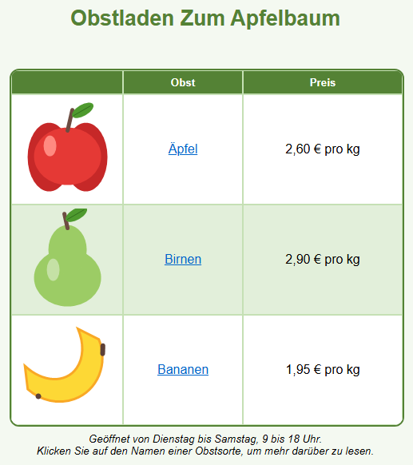

Lernpfad › Lektion 8
Vom Entwurf zur Website
.html) speichern, den HTML-Code
verstehen und eine gespeicherte Seite später wieder öffnen, um weiterzuarbeiten.
Entwurf oder Webseite?
| Datei | Was ist das? | Öffnen mit |
|---|---|---|
.htd | Ihr Entwurf, an dem Sie weiterarbeiten. | Advanced Html Designer |
.html | Die Webseite, wie Besucher sie sehen. | jedem Webbrowser (und auch dem Designer) |
Den HTML-Code ansehen
Klicken Sie unten auf Hier klicken für Extrafunktionen. Der ausgeklappte Bereich hat zwei Registerkarten:
- Html-Dokument: die vollständige Webseite, mit den Textblöcken und den Seiteneinstellungen.
- Html-Tabelle: nur die Tabelle, zum Einfügen in eine bestehende Webseite.
Die wichtigsten Teile des Codes:
| Code | Bedeutung |
|---|---|
<table> | Anfang der Tabelle (</table> ist das Ende) |
<tr> | eine Zeile (table row) |
<td> | eine Zelle (table data); colspan und rowspan für verbundene Zellen |
style="..." | das Format: Farben, Rahmen, Ausrichtung, Schriftgröße |
<a href="..."> | ein Hyperlink |
<img src="..."> | ein Bild; das Bild selbst ist in den Code eingebettet (data:image/png...) |
<div class="designer-textblock"> | ein Textblock |
So wird daraus eine Webseite
- Öffnen Sie das Beispiel (oder Ihren eigenen Entwurf) und klappen Sie den Bereich aus.
- Klicken Sie auf der Registerkarte Html-Dokument auf
 HTML-Dokument speichern.
HTML-Dokument speichern. - Wählen Sie einen Ordner und einen Namen, zum Beispiel
obstladen.html. - Doppelklicken Sie im Explorer auf die Datei: Sie öffnet sich in Ihrem Webbrowser. Klicken Sie auf die Links, um sie zu testen.
Weil die Bilder in den Code eingebettet sind, ist Ihre Webseite eine einzige Datei. Sie können sie per E-Mail verschicken,
auf einen USB-Stick kopieren oder auf eine Website stellen. Bei vielen Webhostern muss die Startseite index.html heißen.
Ihre Webseite als PDF
Möchten Sie Ihre Arbeit drucken oder verschicken? Klicken Sie im ausgeklappten Bereich auf der Registerkarte Html-Dokument auf PDF (Als PDF speichern) und wählen Sie einen Namen. Die PDF erhält das Papierformat der Seite (Registerkarte Einstellungen) und sieht genauso aus wie im Test-Browser: mit Farben, Bildern, Textblöcken und anklickbaren Links. Eine lange Tabelle läuft auf der nächsten Seite weiter.
Eine Webseite wieder öffnen
Eine .html-Datei, die Sie mit HTML-Dokument speichern gespeichert haben, enthält unsichtbar auch Ihren
vollständigen Entwurf. Öffnen Sie sie mit  Tabellendesigner öffnen und Sie
können einfach weiterarbeiten, auch ohne die
Tabellendesigner öffnen und Sie
können einfach weiterarbeiten, auch ohne die .htd-Datei. Mehr dazu unter Dateien & Export.
Aufgabe
Speichern Sie das Beispiel als obstladen.html und öffnen Sie es in Ihrem Browser. Bananen werden billiger: Sie kosten
jetzt 1,75 € pro kg. Ändern Sie den Preis im Designer, speichern Sie die Webseite erneut und aktualisieren Sie Ihren
Browser (F5). Suchen Sie danach im HTML-Code die Adresse des Links hinter Bananen.
Lösung
Klappen Sie den Bereich zu, doppelklicken Sie im Designer auf den Preis der Bananen und geben Sie den neuen Preis ein. Klappen Sie
den Bereich wieder aus, klicken Sie auf HTML-Dokument speichern und wählen Sie dieselbe Datei: Die alte wird ersetzt. Drücken Sie
im Browser F5 und Sie sehen den neuen Preis. Im Code steht der Link als
<a href="https://de.wikipedia.org/wiki/Bananen">Bananen</a>.
Arbeiten Sie unter Linux? Öffnen Sie das Beispiel dann selbst mit Tabellendesigner öffnen: Ordner
lessen/de, Datei les08-fruitwinkel.htd.